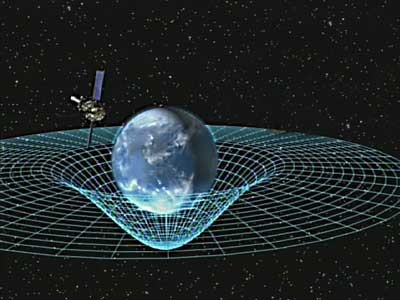
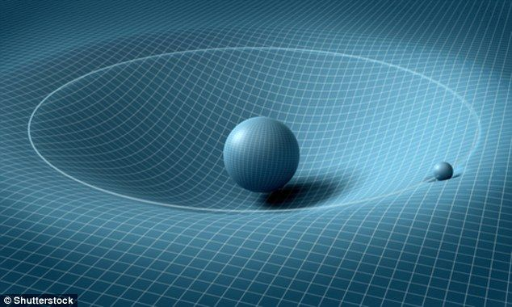
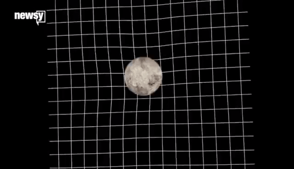

SPACE TIME

What is space-time?

The fabric of space-time is a conceptual model combining the three dimensions of space
with the fourth dimension of time. According to the best of current physical theories,
space-time explains the unusual relativistic effects that arise from traveling near the
speed of light as well as the motion of massive objects in the universe.
WHO DISCOVERED SPACE-TIME?
The famous physicist Albert Einstein helped develop the idea of space-time as part of his
theory of relativity. Prior to his pioneering work, scientists had two separate theories to
explain physical phenomena: Isaac Newton's laws of physics described the motion of massive
objects, while James Clerk Maxwell's electromagnetic models explained the properties of
light, according to NASA.
But experiments conducted at the end of the 19th century suggested that there was something
special about light. Measurements showed that light always traveled at the same speed,
no matter what. And in 1898, the French physicist and mathematician Henri Poincaré speculated
that the velocity of light might be an unsurpassable limit. Around that same time, other
researchers were considering the possibility that objects changed in size and mass, depending
on their speed.
Einstein pulled all of these ideas together in his 1905 theory of special relativity,
which postulated that the speed of light was a constant. For this to be true, space and
time had to be combined into a single framework that conspired to keep light's speed the
same for all observers.
A person in a superfast rocket will measure time to be moving slower and the lengths of
objects to be shorter compared with a person traveling at a much slower speed. That's because
space and time are relative — they depend on an observer's speed. But the speed of light is
more fundamental than either.
The conclusion that space-time is a single fabric wasn't one that Einstein reached by himself.
That idea came from German mathematician Hermann Minkowski, who said in a 1908 colloquium,
"Henceforth space by itself, and time by itself, are doomed to fade away into mere shadows,
and only a kind of union of the two will preserve an independent reality."
The space-time he described is still known as Minkowski space-time and serves as the
backdrop of calculations in both relativity and quantum-field theory. The latter describes
the dynamics of subatomic particles as fields, according to astrophysicist and science writer
Ethan Siegel.
HOW SPACE-TIME WORKS

Nowadays, when people talk about space-time, they often describe it as resembling a sheet
of rubber. This, too, comes from Einstein, who realized as he developed his theory of
general relativity that the force of gravity was due to curves in the fabric of space-time.
Massive objects — like the Earth, sun or you — create distortions in space-time that cause
it to bend. These curves, in turn, constrict the ways in which everything in the universe
moves, because objects have to follow paths along this warped curvature. Motion due to gravity
is actually motion along the twists and turns of space-time.
A NASA mission called Gravity Probe B (GP-B) measured the shape of the space-time vortex
around the Earth in 2011 and found that it closely accords with Einstein's predictions.
But much of this remains difficult for most people to wrap their heads around. Although
we can discuss space-time as being similar to a sheet of rubber, the analogy eventually
breaks down. A rubber sheet is two dimensional, while space-time is four dimensional.
It's not just warps in space that the sheet represents, but also warps in time.
The complex equations used to account for all of this are tricky for even physicists to work with.